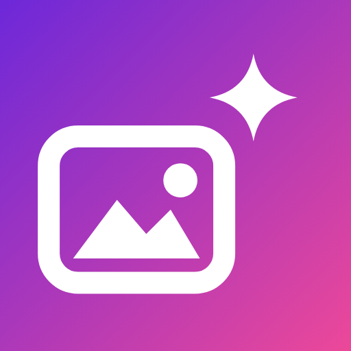

RAVE Photo Editor
by RAVE Management LLC
Edit photos with on-device AI. Remove or blur backgrounds, swap in a clean colour, enhance in one tap and add filters. Your photos are processed on your phone and never uploaded.
Features
- AI Cutout – remove the background and save a transparent PNG.
- Portrait – blur the background behind your subject.
- Backdrop – replace the background with a solid colour.
- Enhance – balance exposure, contrast and colour in one tap.
- Filters and Adjust – eight looks plus brightness, contrast, saturation and warmth.
Help
"The AI model is still downloading" – the first time you use an AI tool, Google Play services downloads the on-device model. Stay connected to the internet for a minute and try again.
Where are my saved photos? – in your gallery, in the Pictures/RAVE Photo Editor folder.
Compare with the original – press and hold the photo.